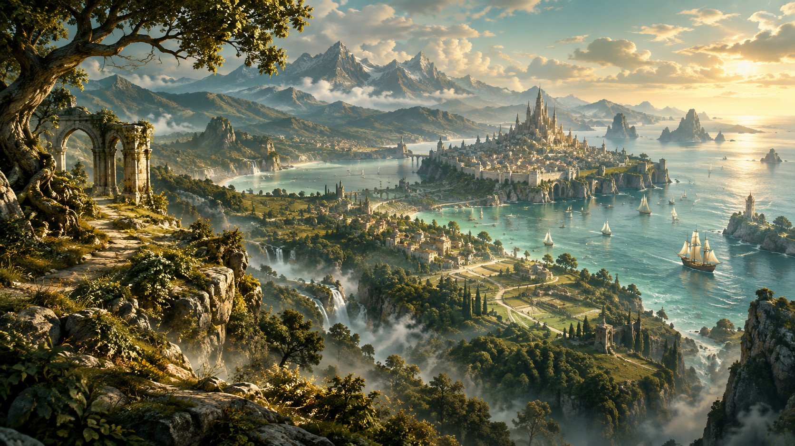

WESTERN FULMANNON
Fertile Coast
A fruitful coastal region containing an eclectic collection of countries—from Brähm and the red Adamant Realms to the fertile lowlands of Taurniel, the ancient Kryger, and the Elven Triumvirate.
Explore the Fertile Coast →